Mina has just joined the pilot. Mina knows sales well but has never opened the CRM. Nour, a senior colleague, walks through what a working day looks like.
M
MinaMorning, Nour! It's my first day on the system. Where do I start?
N
NourSign in with the email and password administration gave you. There is no self sign-up; administration creates every account.
M
MinaWhat if I forget my password and keep trying?
N
NourCareful: five wrong attempts in a row lock the account, and you will need administration. And if you leave it idle for eight hours, it signs you out.
M
MinaA new customer wants ten laptops. What do I do?
N
NourOpen Customers and add them. If a similar name exists you get a warning, but the record still saves. Just check it is not the same customer.
M
MinaAnd the request itself?
N
NourFrom the customer page, click New request. That is a deal with a DL number. Then record the supplier offer (SQ) with the prices you received.
M
MinaAnd the quotation for the customer? How are the numbers worked out?
Smart Technology — CRM · Sales Guide3
★
The story: Mina's first day on the CRM
2/2
N
NourThe system calculates them. You choose the currency, margin, discount and tax, add the supplier offer, and save a draft.
M
MinaThen I send it straight to the customer?
N
NourNot yet. First Submit for approval, and a Manager approves it. Then generate the PDF in the customer's language and click Send to the customer.
M
MinaAnd when the customer replies?
N
NourRecord the reply: accepted with their PO reference and date, partially accepted, a counter-offer, or rejected. Each has its own rules; the lessons show them.
M
MinaAnd at the end of the day?
N
NourYour daily report: follow-ups, notes, who receives it, then submit. The weekly one the system creates on its own every Sunday.
M
MinaThat makes sense. Let's go step by step.
Smart Technology — CRM · Sales Guide4
1
Signing in
Step 1 of 2
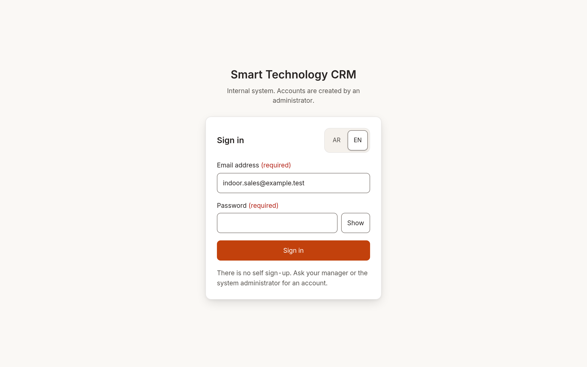
1. Open the system link. Type your email in Email address and your password, then click Sign in. Switch language with AR / EN at the top of the card.
⚠ If this happens
There is no sign-up: administration creates accounts.
Smart Technology — CRM · Sales Guide5
1
Signing in
Step 2 of 2
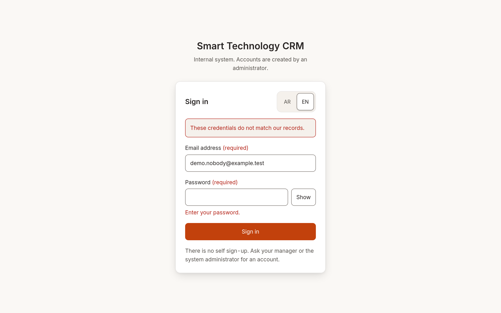
2. If the email or password is wrong, this red box appears. Check what you typed and try again calmly.
⚠ If this happens
Wrong email or password: These credentials do not match our records.
After five wrong attempts in a row: This account is locked after too many failed sign-in attempts. Contact administration. Contact administration; do not keep trying.
After eight idle hours you are signed out and may see: Your session is no longer valid. Please sign in again. Just sign in again.
Smart Technology — CRM · Sales Guide6
2
A tour of the sidebar
Step 1 of 1
1. The sidebar takes you everywhere: Customers, Supplier Quotations, Requests / Deals, Quotations, Purchase Orders, Reports. After signing in you land on Customers. The top bar shows your name, the language switch and Sign out.
⚠ If this happens
If a screen is missing from the menu, your role has no access to it (see lesson 14).
Smart Technology — CRM · Sales Guide7
3
Adding a customer
Step 1 of 2
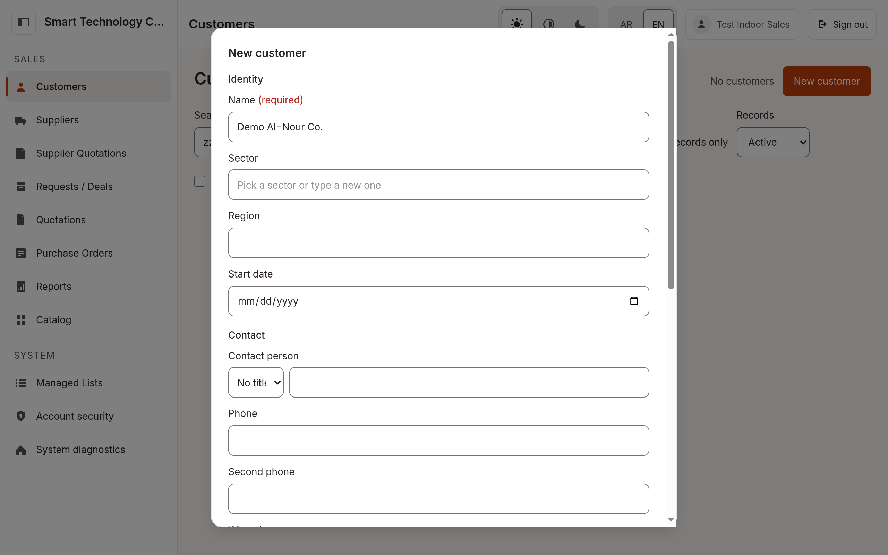
1. In Customers click New customer. Type the Name (the only required field), fill in what else you have, then click Save.
⚠ If this happens
A customer's status is not typed in: the system derives it from their deals.
Smart Technology — CRM · Sales Guide8
3
Adding a customer
Step 2 of 2
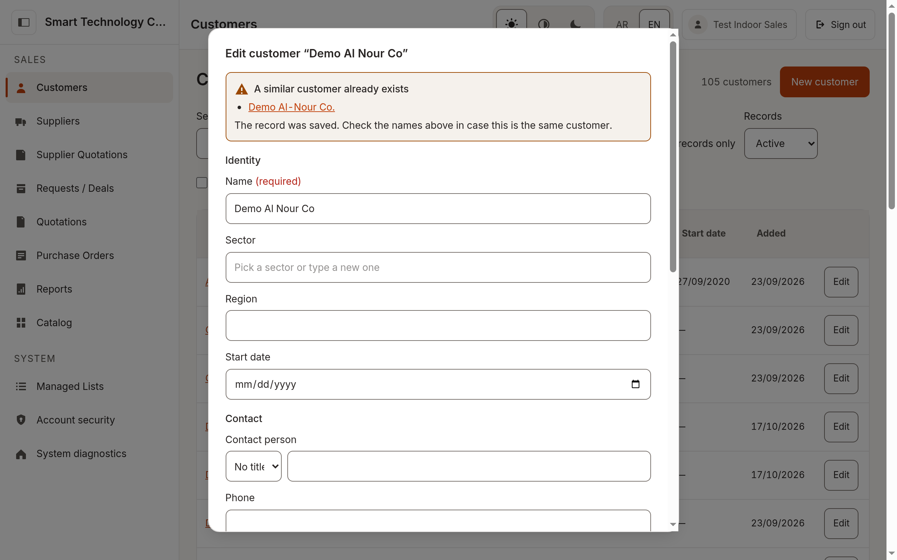
2. If a similar name already exists, this warning appears at the top of the form. The customer is already saved; click the name in the warning to check it is not the same customer.
⚠ If this happens
The warning: A similar customer already exists and The record was saved. Check the names above in case this is the same customer.
If it really is the same customer, tell your Manager. Do not add a third one.
Smart Technology — CRM · Sales Guide9
4
A new request (deal, DL)
Step 1 of 2
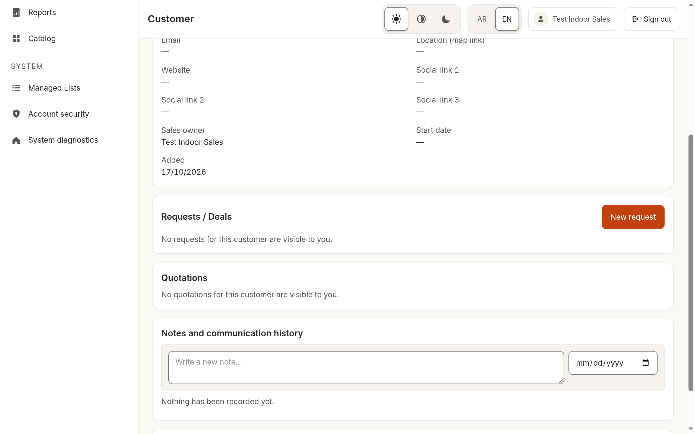
1. Open the customer and scroll to Requests / Deals, then click New request. (Or use New deal on the Requests / Deals screen.)
⚠ If this happens
A customer may have several open deals at once; that is normal.
Smart Technology — CRM · Sales Guide10
4
A new request (deal, DL)
Step 2 of 2
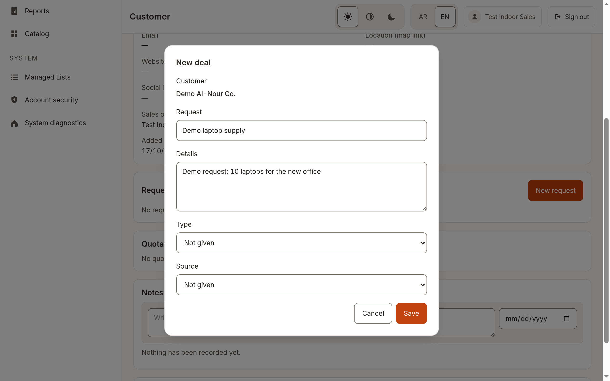
2. The customer is already filled in. Type the Request and Details, pick the type and source if you know them, and click Save. The deal page opens with its DL number.
⚠ If this happens
A request you create shows as pending approval until a Manager approves it.
The deal status moves on its own with the quotation and the customer reply. By hand only after it is won (lesson 10).
Smart Technology — CRM · Sales Guide11
5
The supplier offer (SQ)
Step 1 of 7
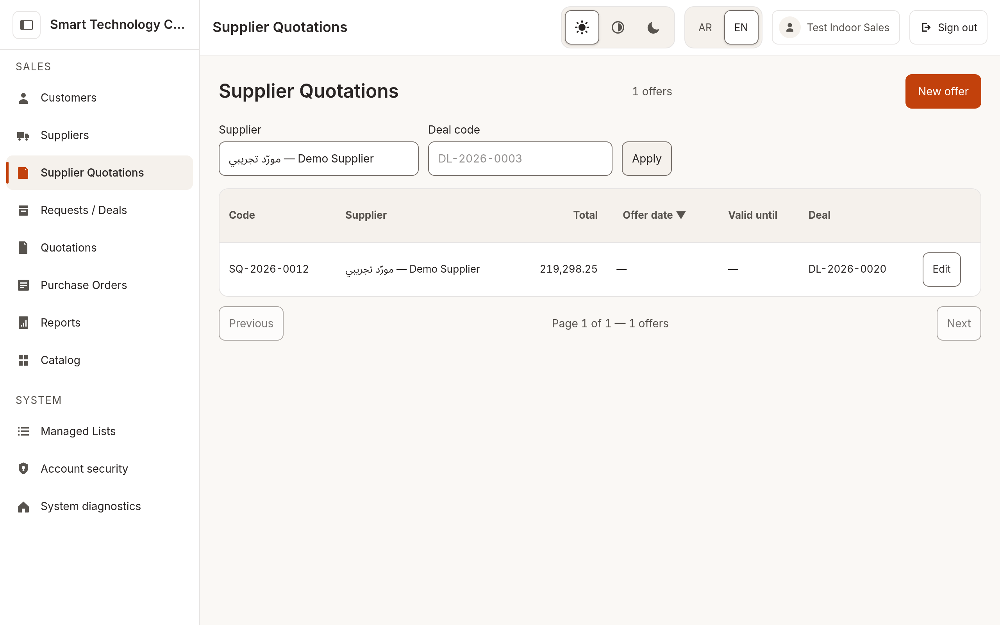
1. In Supplier Quotations click New offer.
Smart Technology — CRM · Sales Guide12
5
The supplier offer (SQ)
Step 2 of 7
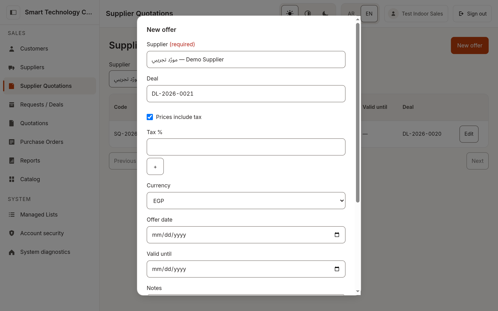
2. Pick the Supplier, link the deal (type its DL number) and choose the Currency. If the supplier's prices include tax, tick Prices include tax.
⚠ If this happens
An offer can be saved without a deal, but linking it makes the quotation easier later.
Smart Technology — CRM · Sales Guide13
5
The supplier offer (SQ)
Step 3 of 7
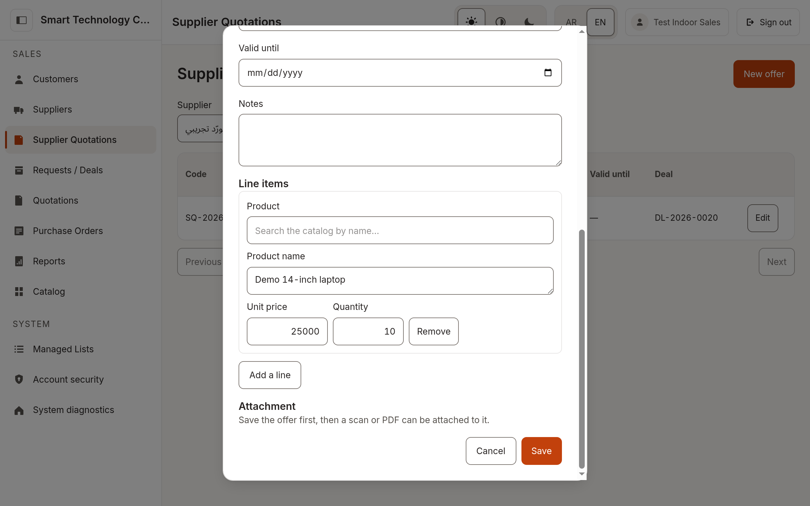
3. Click Add a line, type the product name or pick it from the catalog, then the Unit price and Quantity. Repeat for every line.
Smart Technology — CRM · Sales Guide14
5
The supplier offer (SQ)
Step 4 of 7
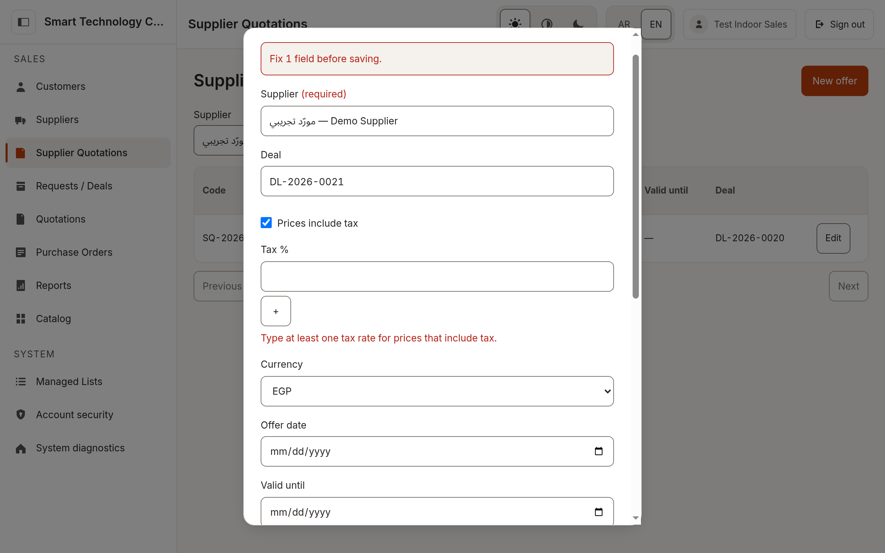
4. If prices include tax, you must type the tax rate. Forget it and click Save, and this field turns red.
⚠ If this happens
The message: Type at least one tax rate for prices that include tax.
Add more than one rate with the "+" button.
Smart Technology — CRM · Sales Guide15
5
The supplier offer (SQ)
Step 5 of 7
5. The attachment (scan or PDF of the offer) cannot be added before saving. Click Save first.
⚠ If this happens
You will see: Save the offer first, then a scan or PDF can be attached to it.
Smart Technology — CRM · Sales Guide16
5
The supplier offer (SQ)
Step 6 of 7
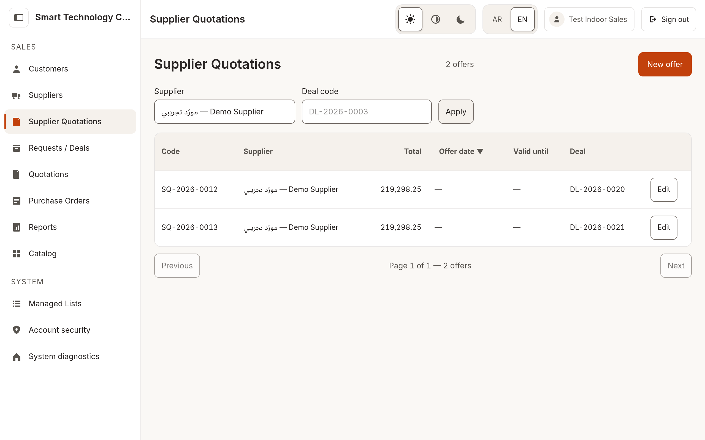
6. The offer is saved with an SQ number. To attach the file, click Edit on its row.
Smart Technology — CRM · Sales Guide17
5
The supplier offer (SQ)
Step 7 of 7
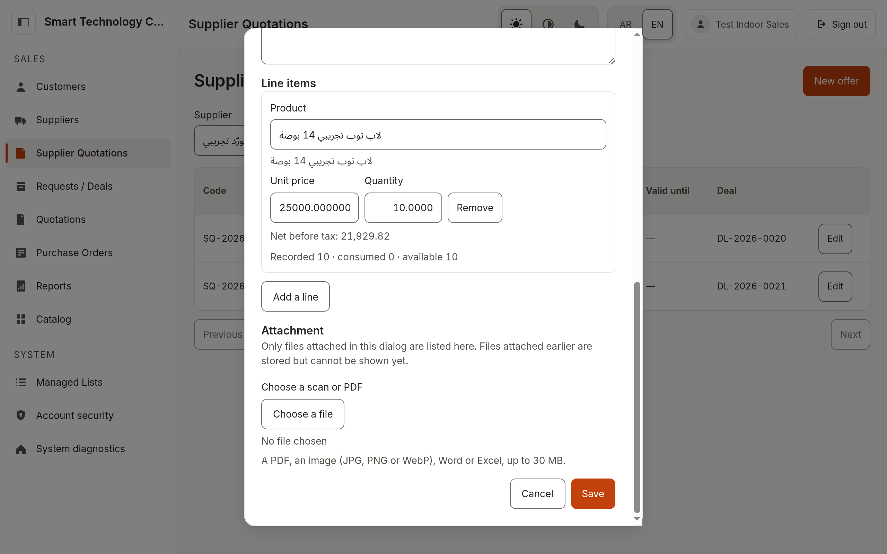
7. Now the Choose a file button is there. Pick the file and it uploads by itself.
⚠ If this happens
Allowed files: A PDF, an image (JPG, PNG or WebP), Word or Excel, up to 30 MB.
Smart Technology — CRM · Sales Guide18
6
The quotation (QT)
Step 1 of 8
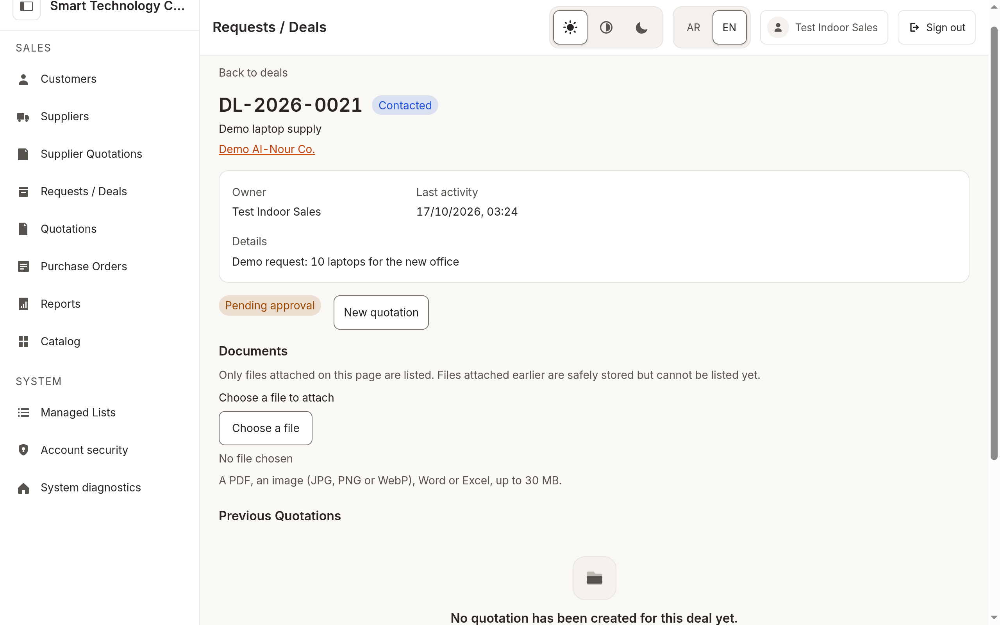
1. On the deal page click New quotation.
Smart Technology — CRM · Sales Guide19
6
The quotation (QT)
Step 2 of 8
2. Choose the Currency, type the Default margin % and Discount %, and tax if any. The discount comes off before tax.
⚠ If this happens
The exchange rate is fixed when the quotation is created; later rate changes do not touch it.
Leave tax empty = no tax (and no tax line in the PDF).
Smart Technology — CRM · Sales Guide20
6
The quotation (QT)
Step 3 of 8
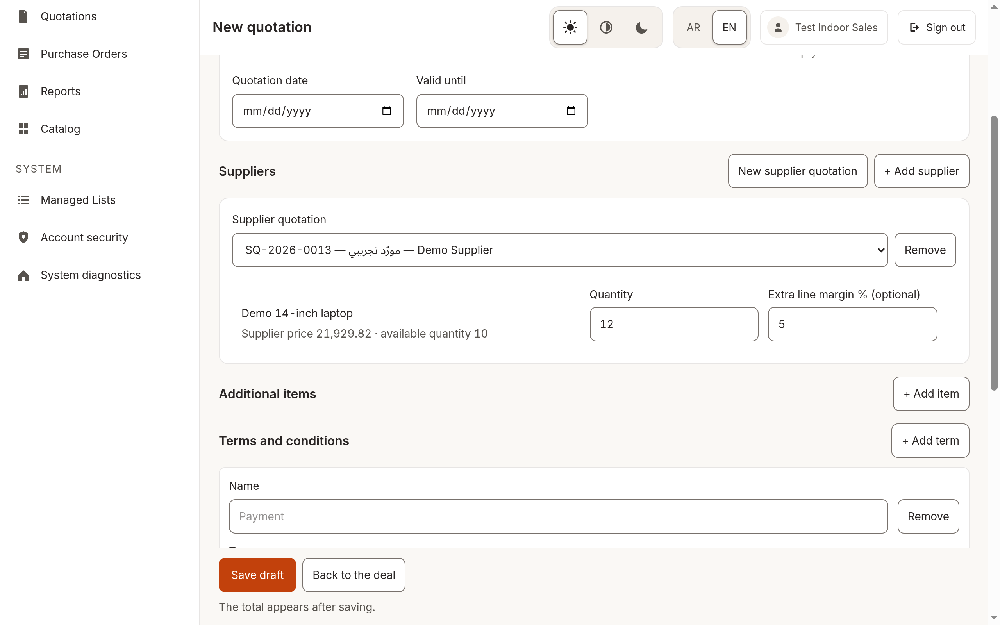
3. Click Add supplier and pick the supplier offer (SQ) from the list. Its lines appear below.
⚠ If this happens
No offer yet? Click New supplier quotation and record it here.
If a supplier line has no usable price, saving is refused: This supplier line has no usable price — the line is gone, or its supplier quotation has no currency — so the quotation cannot be saved.
Smart Technology — CRM · Sales Guide21
6
The quotation (QT)
Step 4 of 8
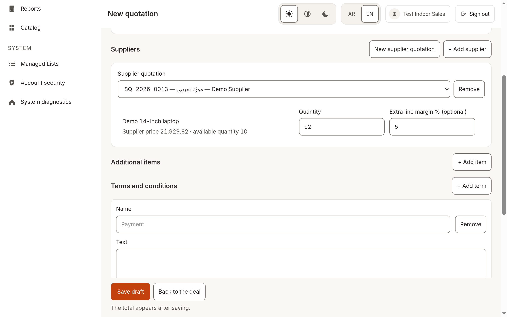
4. Type the Quantity for each line. For extra margin on one line, type it in this field; it is added to the quotation margin.
Smart Technology — CRM · Sales Guide22
6
The quotation (QT)
Step 5 of 8
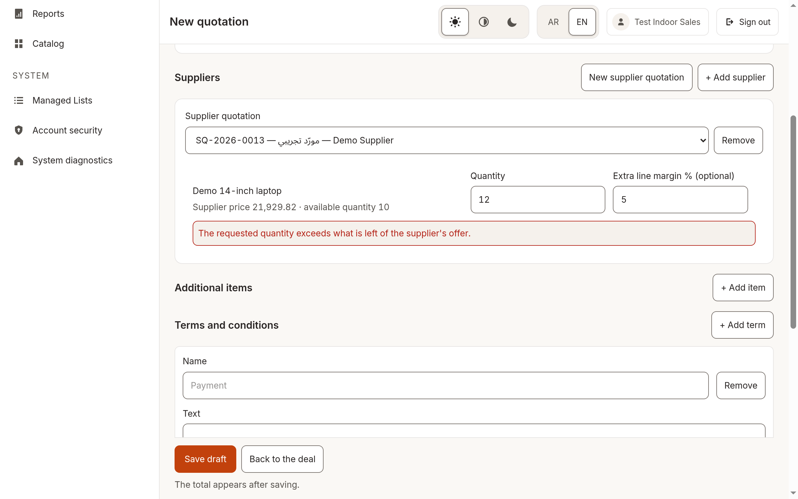
5. Click Save draft. If the quantity is more than the supplier has left, a red warning appears under the line. It is only a warning: the quotation is saved.
⚠ If this happens
The warning: The requested quantity exceeds what is left of the supplier's offer.
If the supplier price changed after you built it: Supplier price has changed — review pricing.
Smart Technology — CRM · Sales Guide23
6
The quotation (QT)
Step 6 of 8
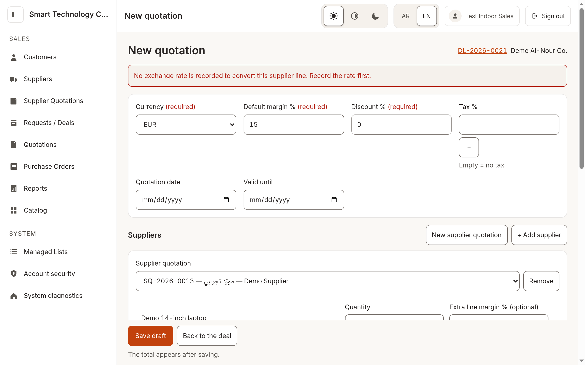
6. If you choose a currency with no recorded rate from the supplier's currency, saving is refused and this message appears at the top.
⚠ If this happens
The message: No exchange rate is recorded to convert this supplier line. Record the rate first. Ask a Manager to record the rate, or choose another currency.
Smart Technology — CRM · Sales Guide24
6
The quotation (QT)
Step 7 of 8
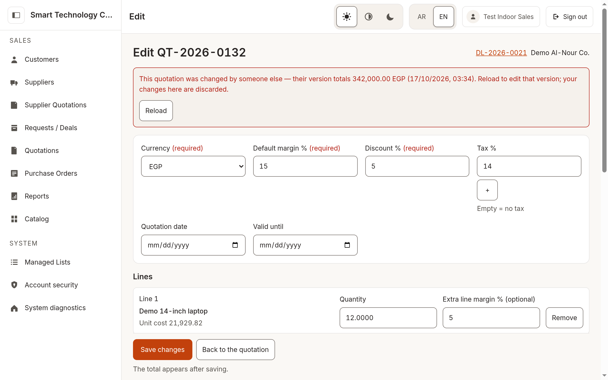
7. If someone else edited the same quotation while you had it open, your save is refused and this box appears. Click Reload and redo your edit on their version.
⚠ If this happens
It starts: This quotation was changed by someone else Your unsaved changes are discarded, so type them again.
Smart Technology — CRM · Sales Guide25
6
The quotation (QT)
Step 8 of 8
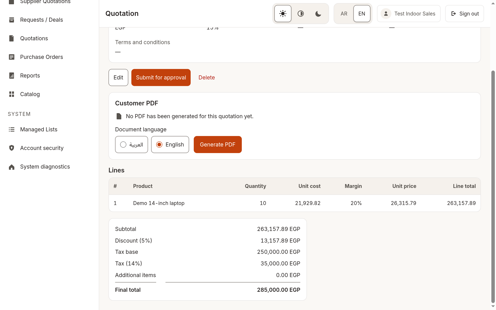
8. After saving, open the quotation: every total is calculated by the system (subtotal, discount, tax base, tax, final total).
⚠ If this happens
Additional items (delivery, installation) are never taxed.
Smart Technology — CRM · Sales Guide26
7
Approval and sending
Step 1 of 4
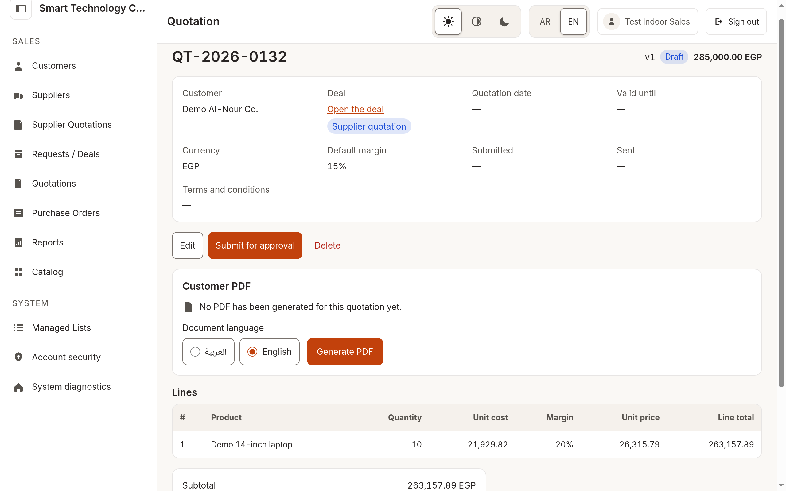
1. The quotation is still a Draft. Click Submit for approval.
Smart Technology — CRM · Sales Guide27
7
Approval and sending
Step 2 of 4
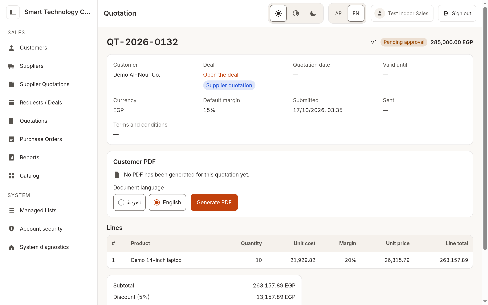
2. The status is now Pending approval. A Manager approves it from the approvals screen, or returns it with a note for you to fix and resubmit.
Smart Technology — CRM · Sales Guide28
7
Approval and sending
Step 3 of 4
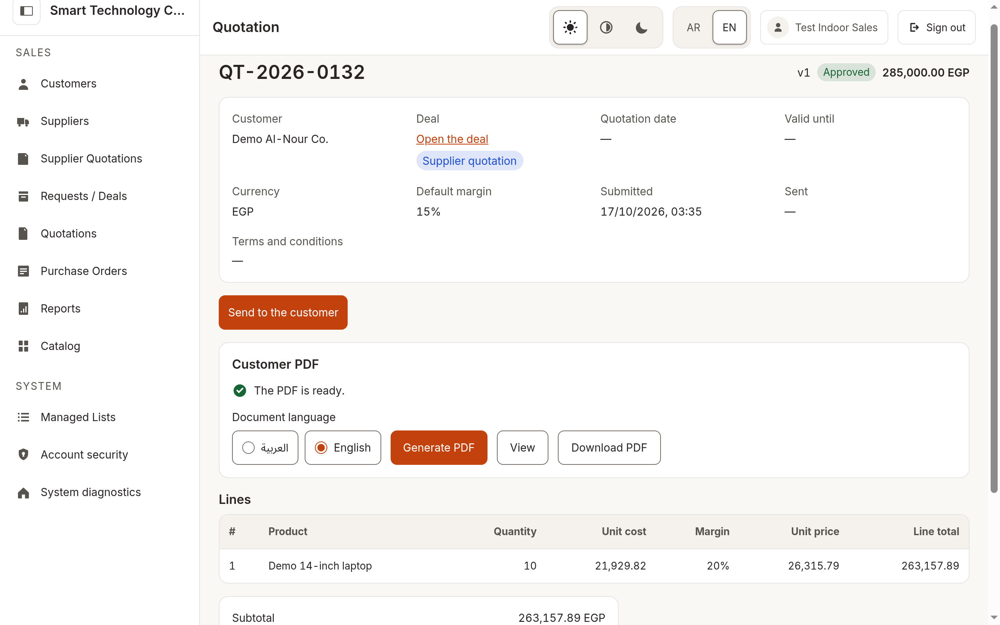
3. Once approved, Send to the customer appears. Generate the PDF first (lesson 8), then click it.
⚠ If this happens
If the deal has not reached the supplier offer stage: This quotation's deal has not reached the supplier quotation stage yet, so the quotation cannot be sent.
Smart Technology — CRM · Sales Guide29
7
Approval and sending
Step 4 of 4
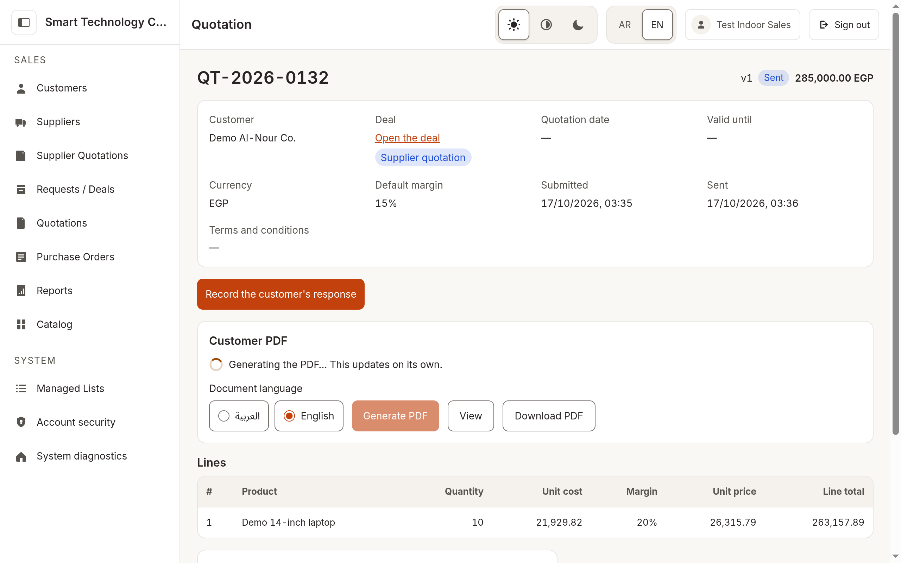
4. The status is Sent and the deal moved on by itself. Now wait for the customer.
Smart Technology — CRM · Sales Guide30
8
The PDF
Step 1 of 3
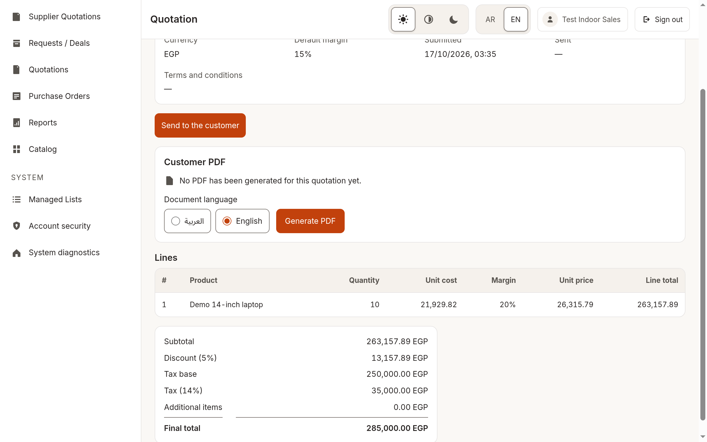
1. In Customer PDF choose the Document language: Arabic or English, to suit the customer.
Smart Technology — CRM · Sales Guide31
8
The PDF
Step 2 of 3
2. Click Generate PDF. It is built in the background; wait a few seconds.
⚠ If this happens
The PDF never shows the supplier name, supplier prices, cost or margin.
Smart Technology — CRM · Sales Guide32
8
The PDF
Step 3 of 3
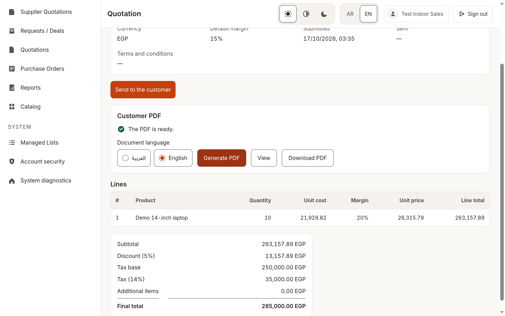
3. When The PDF is ready. shows, click Download PDF or View.
Smart Technology — CRM · Sales Guide33
9
Recording the customer's reply
Step 1 of 7
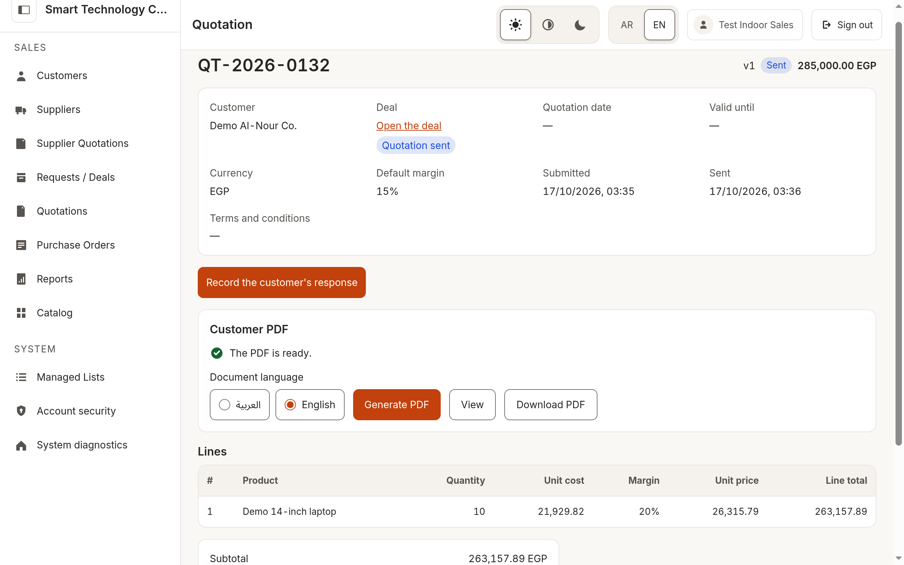
1. On the sent quotation click Record the customer's response.
⚠ If this happens
If the quotation is Expired, the only choice offered is "Rejected".
Smart Technology — CRM · Sales Guide34
9
Recording the customer's reply
Step 2 of 7
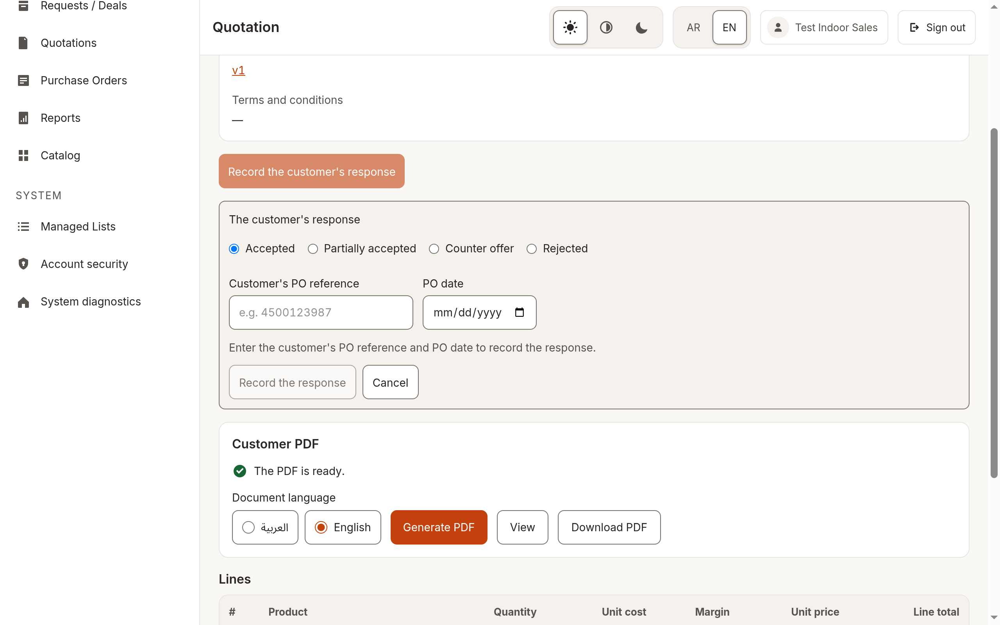
2. Customer agreed? Choose Accepted. You must enter the Customer's PO reference and PO date.
⚠ If this happens
Without them the button stays disabled: Enter the customer's PO reference and PO date to record the response.
Smart Technology — CRM · Sales Guide35
9
Recording the customer's reply
Step 3 of 7
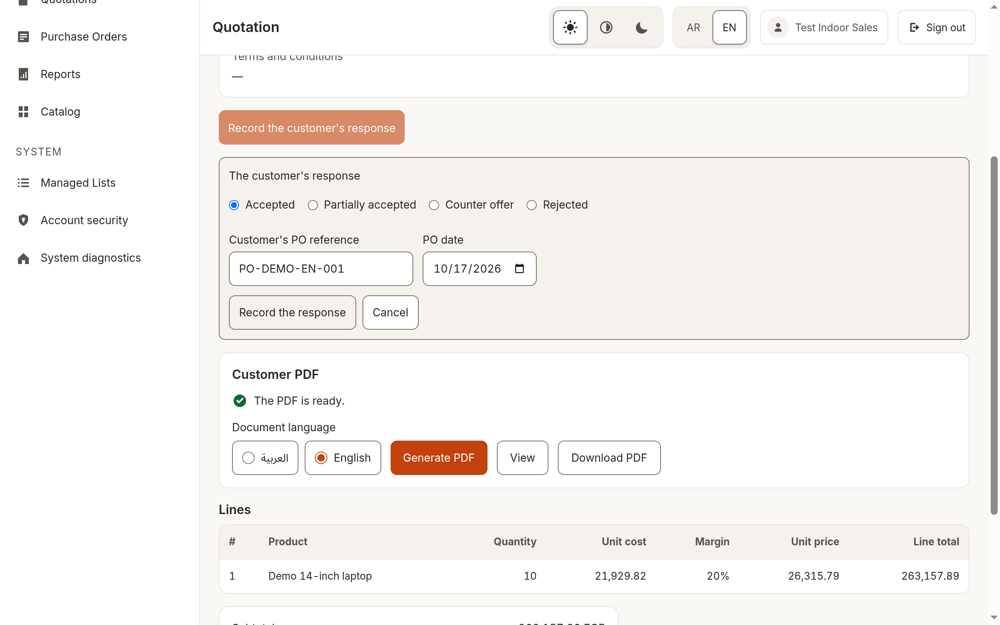
3. Click Record the response. The system creates the purchase order (PO) and the deal becomes Won.
Smart Technology — CRM · Sales Guide36
9
Recording the customer's reply
Step 4 of 7
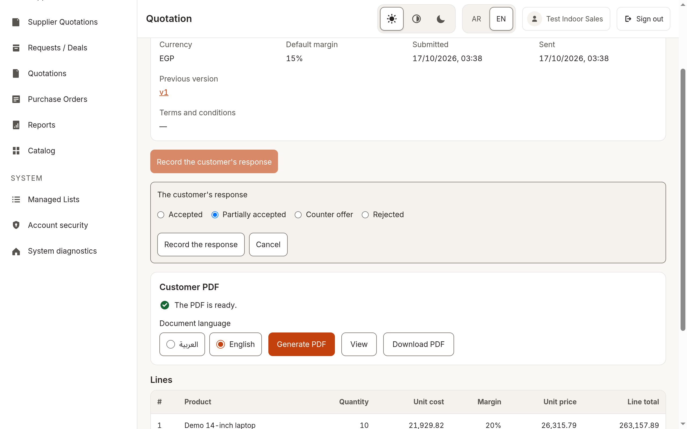
4. Agreed to part of it? Choose Partially accepted and click Record the response.
Smart Technology — CRM · Sales Guide37
9
Recording the customer's reply
Step 5 of 7
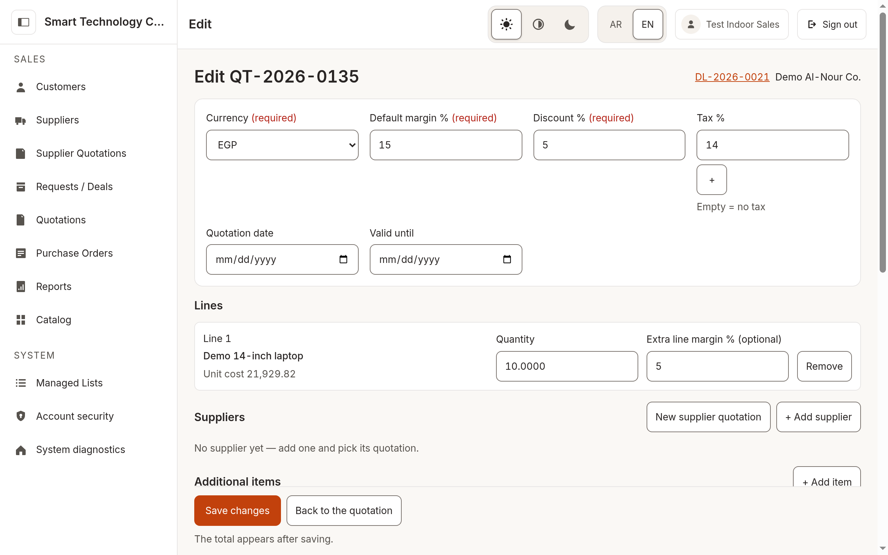
5. The system makes a full new version and opens it for editing. The old version stays exactly as it was. Edit, save and submit for approval again.
Smart Technology — CRM · Sales Guide38
9
Recording the customer's reply
Step 6 of 7
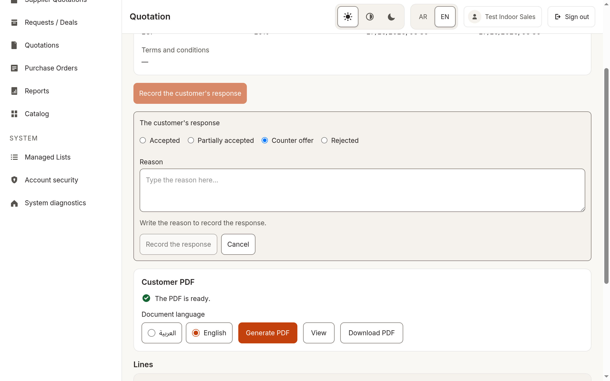
6. A counter-offer? Choose Counter offer and type the reason. It also makes a new version.
⚠ If this happens
Without a reason the button stays disabled: Write the reason to record the response.
Smart Technology — CRM · Sales Guide39
9
Recording the customer's reply
Step 7 of 7
7. Rejected? Choose Rejected and type the reason.
⚠ If this happens
The reason is required: Write the reason to record the response.
If the deal has no other open quotation it becomes Lost: The deal is now Lost.
Smart Technology — CRM · Sales Guide40
10
Moving a won deal on
Step 1 of 3
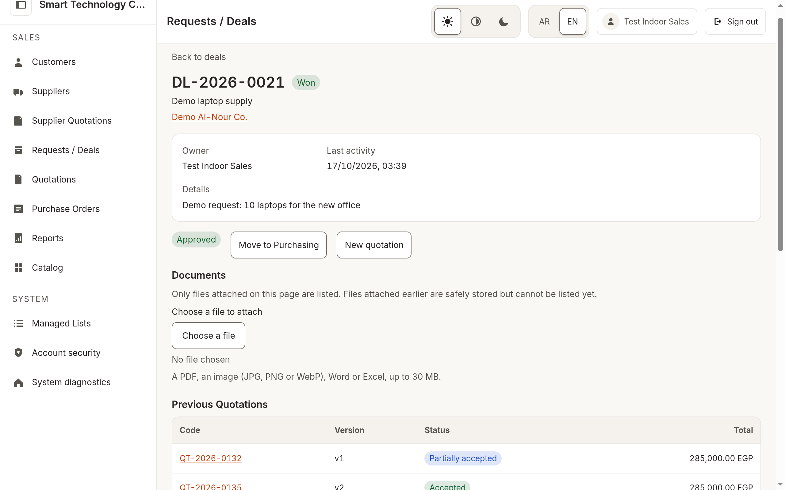
1. Once a deal is Won, only these moves are by hand: Purchasing → Delivery → Delivery complete. On the deal page click the button naming the next step.
⚠ If this happens
"Delivery complete" is for Indoor Sales only.
Smart Technology — CRM · Sales Guide41
10
Moving a won deal on
Step 2 of 3
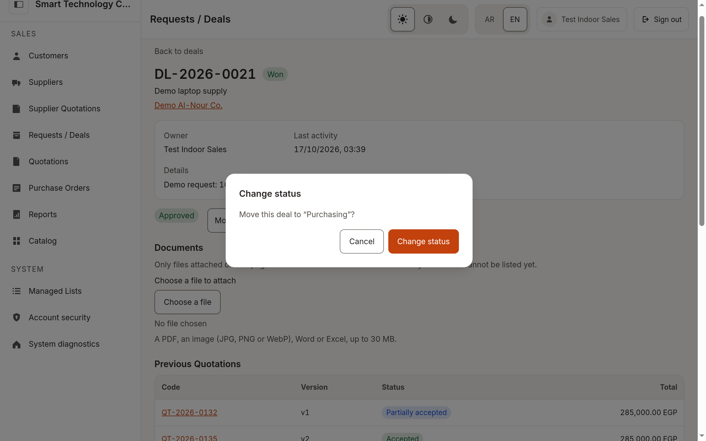
2. You are asked to confirm. Click Change status. There is no way back.
Smart Technology — CRM · Sales Guide42
10
Moving a won deal on
Step 3 of 3
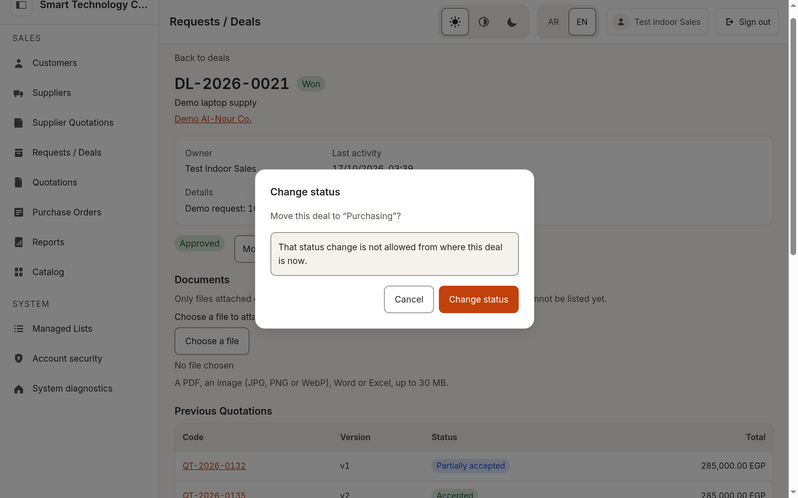
3. If someone moved the deal while your page was open, the change is refused. Close the box and reload the page.
⚠ If this happens
The message: That status change is not allowed from where this deal is now.
Smart Technology — CRM · Sales Guide43
11
Purchase orders
Step 1 of 1
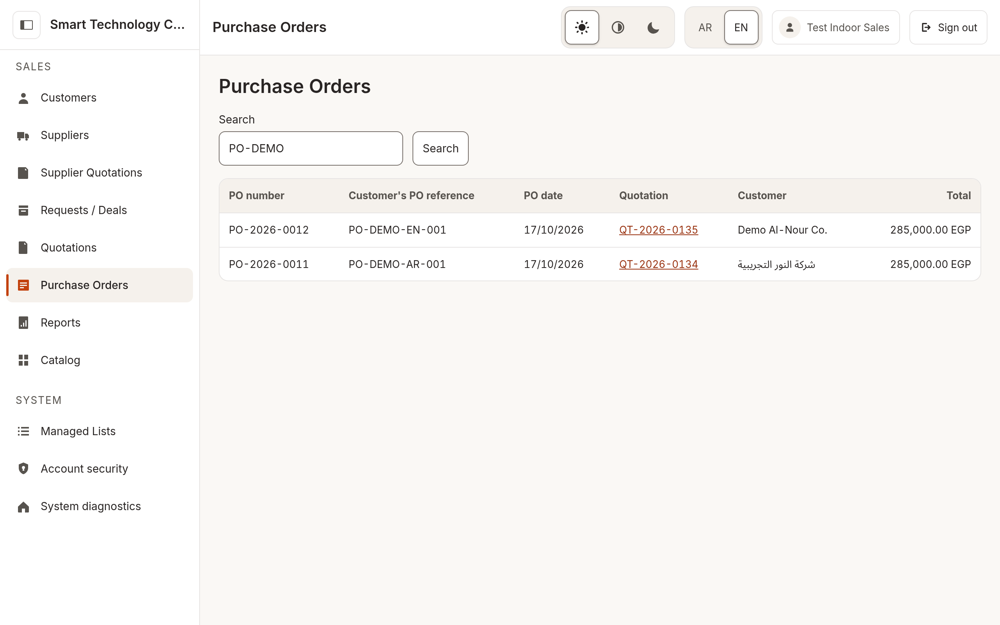
1. In Purchase Orders type our PO number or the customer's own PO reference in the search box and press Enter.
⚠ If this happens
POs are created when you record "Accepted"; there is no add button here.
Smart Technology — CRM · Sales Guide44
12
The daily report
Step 1 of 6
1. In Reports click New daily report. The day's activity (deals, quotations, replies, POs) fills in by itself.
Smart Technology — CRM · Sales Guide45
12
The daily report
Step 2 of 6
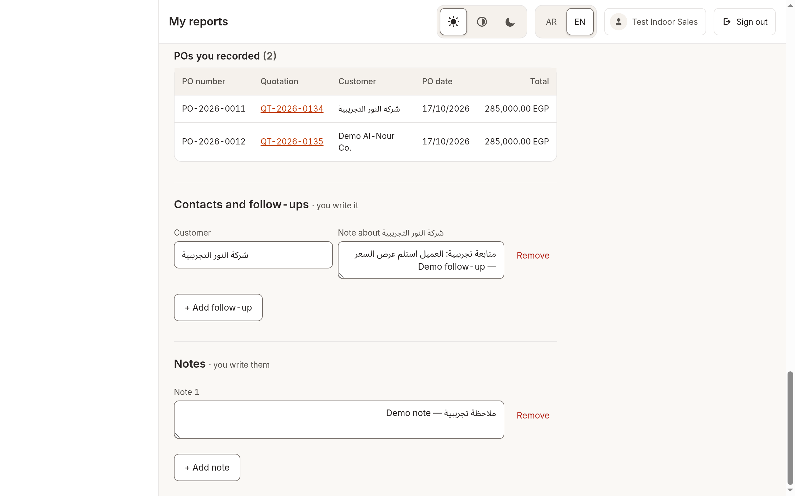
2. Click + Add follow-up, pick the customer and write the follow-up. It saves as you type.
⚠ If this happens
A follow-up with no text: Write the note; the saved one is kept until then.
Smart Technology — CRM · Sales Guide46
12
The daily report
Step 3 of 6
3. For a general note click + Add note.
Smart Technology — CRM · Sales Guide47
12
The daily report
Step 4 of 6
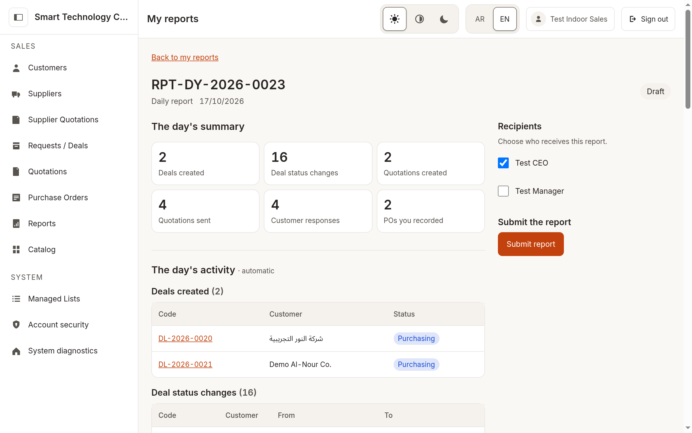
4. In Recipients tick who receives the report (usually your Manager).
⚠ If this happens
With no recipient the submit button stays disabled.
Smart Technology — CRM · Sales Guide48
12
The daily report
Step 5 of 6
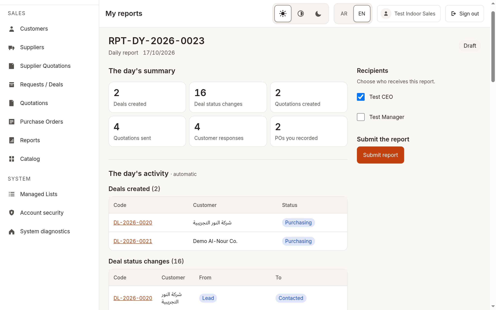
5. Click Submit report.
⚠ If this happens
If the report changed elsewhere: This report changed since you opened it. Reload the page and try again.
Smart Technology — CRM · Sales Guide49
12
The daily report
Step 6 of 6
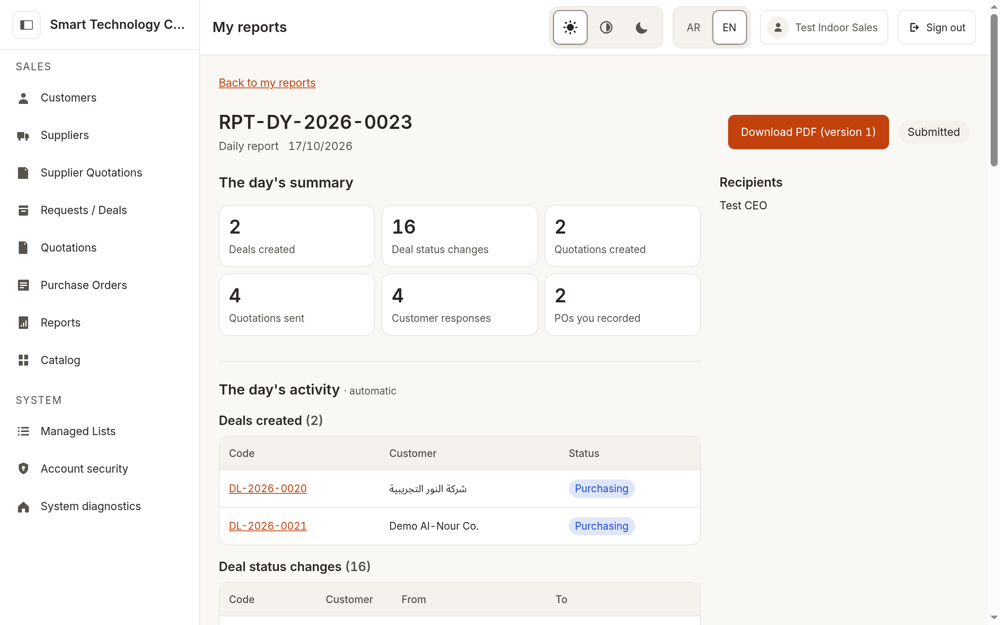
6. The status is now Submitted.
⚠ If this happens
A day with no report shows Missed; one sent after the deadline is marked Delivered late.
If the recipient returns it with a reason, fix it and submit again.
Smart Technology — CRM · Sales Guide50
13
The weekly report
Step 1 of 2
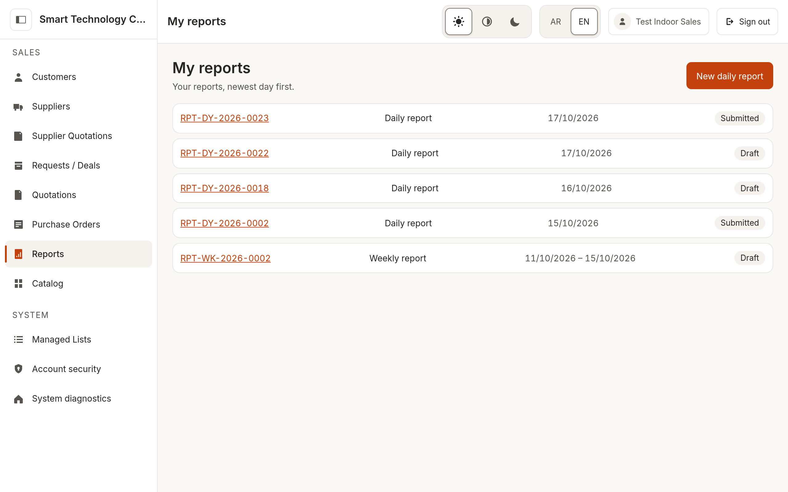
1. You do not create it: the system creates the weekly report every Sunday at 01:00 UTC, and it appears in your list.
Smart Technology — CRM · Sales Guide51
13
The weekly report
Step 2 of 2
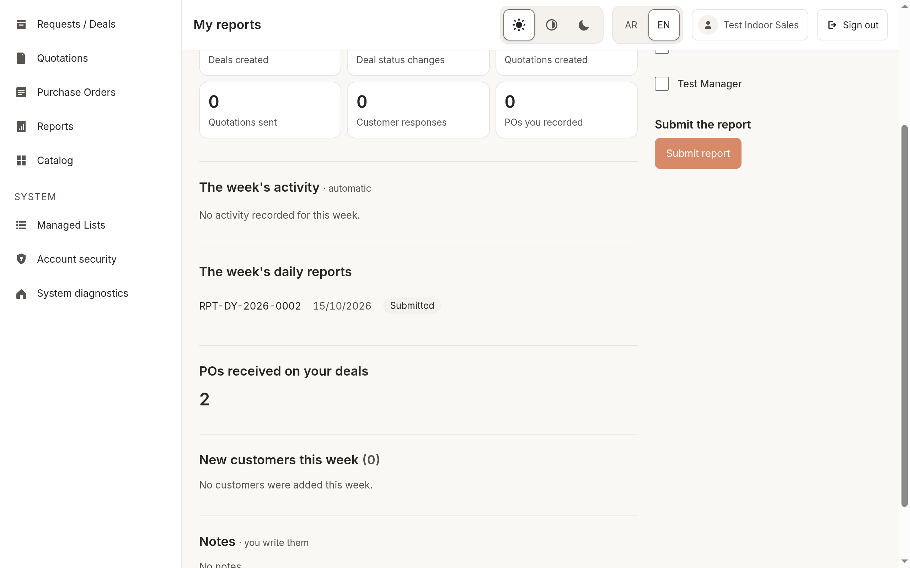
2. Open and review it: it holds the week's daily reports, POs received and new customers. Then submit it.
⚠ If this happens
If you do not review it within 24 hours, the system submits it and marks it Not reviewed.
Smart Technology — CRM · Sales Guide52
14
No access, and empty lists
Step 1 of 2
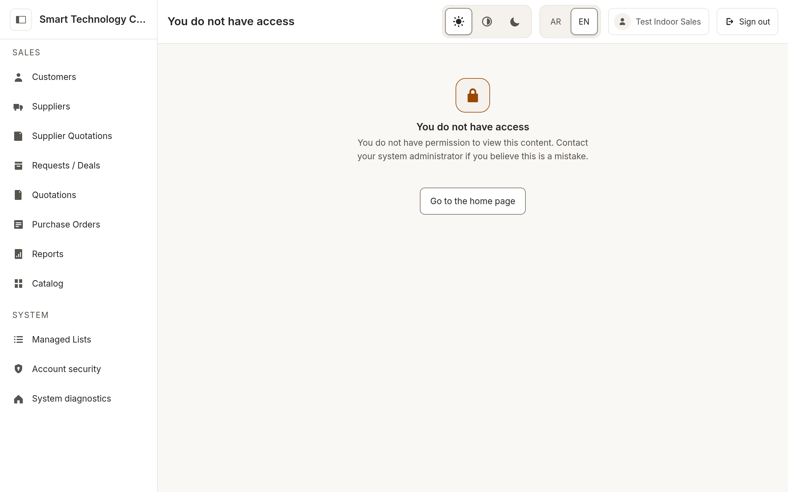
1. Open a screen your role cannot use and you get this page. Click Go to the home page to go back.
⚠ If this happens
The message: You do not have permission to view this content. Contact your system administrator if you believe this is a mistake.
Smart Technology — CRM · Sales Guide53
14
No access, and empty lists
Step 2 of 2
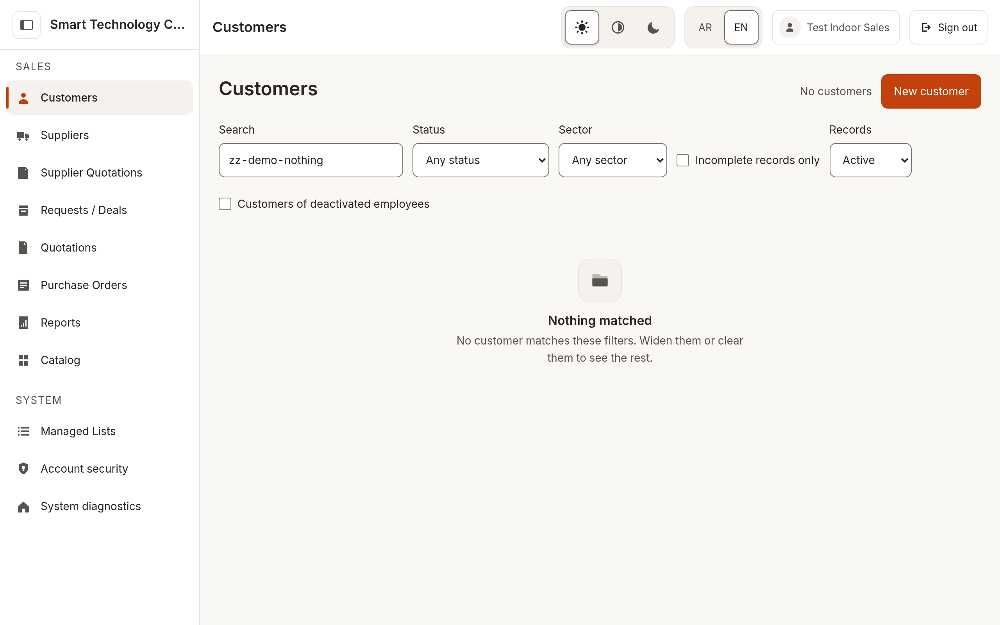
2. If a search or filter finds nothing you see Nothing matched. Clear the search box or widen the filters.
Smart Technology — CRM · Sales Guide54
?
Common questions
My quotation will not saveRead the message at the top: a missing exchange rate, a supplier line with no price, or someone edited it first. → See lesson 6
I was signed outEight idle hours sign you out. Sign in again. → See lesson 1
My account is lockedFive wrong attempts. Contact administration; do not keep trying. → See lesson 1
My report says "Missed"The day passed with no report. Tell your Manager. → See lesson 12
I cannot find "Send to the customer"The quotation is still waiting for approval, or it was returned. → See lesson 7
"Record the response" is disabledThe PO reference and date, or the reason, are missing. → See lesson 9
I cannot attach a file to an offerSave the supplier offer first, then Edit. → See lesson 5
I got a quantity warningOnly a warning; the quotation is saved. Check the quantity with the supplier. → See lesson 6
A "similar customer" warningThe customer is saved. Make sure it is not a duplicate. → See lesson 3
The deal will not moveSomeone moved it first. Reload the page. → See lesson 10
The quotation expired and the customer repliedOnly "Rejected" is offered. Make a new version to carry on. → See lesson 9
A "You do not have access" pageThe screen is not for your role. Go back home. → See lesson 14
Smart Technology — CRM · Sales Guide55
For Outdoor Sales
This guide is the same for Outdoor Sales: the same screens and the same steps.
The only difference today: no "Delivery complete" (lesson 10) — that move belongs to Indoor Sales.
Recording field visits comes in a later release and is not part of this pilot.